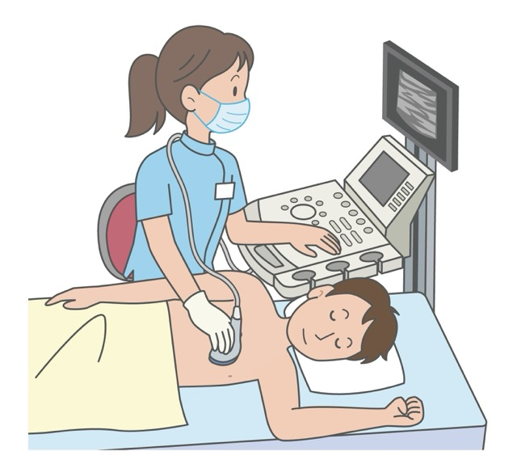

不整脈（動悸・胸の違和感）について
- 「なんだか胸がドキドキする」
- 「脈が一瞬、飛ぶような気がする」
- 「階段を上ると、以前より息が切れる」
そんな, ふとした瞬間に感じる胸の違和感は, 心臓からの大切なサインかもしれません。
不整脈には, 経過を追えば良いものも多い一方で, 放っておくと大きな病気につながるものも隠れています。
一人で抱え込まず, まずはその不安を当院にお聞かせください。
1. 不整脈について詳しく知る
心臓は1日に約10万回, 休むことなく正確なリズムを刻んでいます。このリズムが乱れてしまう状態を「不整脈」と呼びます。
代表的な3つのタイプ
① 脈が速くなる「頻脈（ひんみゃく）」
ドクドクと激しい動悸や, 胸の苦しさを感じます。 特に注意が必要なのが「心房細動（しんぼうさいどう）」です。


心臓の上側の部屋（心房）が, 震えるように細かく動いてしまう状態です。
（補足）なぜ心房細動は怖いの？（心原性脳梗塞のリスク）
心臓が細かく震えると, 中で血の流れがよどみ, 「血栓（血の塊）」ができやすくなります。この塊が血流に乗って, 前触れもなく突然, 脳の太い血管に詰まってしまうのが「心原性脳梗塞」です。
他の脳梗塞に比べて詰まる血管が太いため, 範囲が広くなりやすく, 突然の意識障害や麻痺など, 命に関わる深刻な事態を招くのが特徴です。

心房細動を早期に見つけ, 適切に治療することは, あなたの脳を守ることに直結します。
【知っておきたい】心房細動と「睡眠時無呼吸症候群」の深い関係
実は, 大きないびきや睡眠中の無呼吸を引き起こす「睡眠時無呼吸症候群（SAS）」は, 心房細動を引き起こす大きな原因の一つであることが分かっています。睡眠中の酸欠状態が心臓に強い負担をかけ, リズムを乱してしまうのです。不整脈の根本的な解決には, この睡眠時の呼吸状態にも目を向けることが重要です。
② 脈が遅くなる「徐脈（じょみゃく）」
全身に送られる血液が足りなくなり, 強いだるさ, めまい, 時には意識を失う（失神）こともあります。「最近, 年のせいか疲れやすくなった」と思っていたら, 実は徐脈だったというケースも少なくありません。

③ 脈が飛ぶ「期外収縮（きがいしゅうしゅく）」
「ドキンとする」「脈が抜ける」ような感覚です。多くは心配のないものですが, 回数が極端に多い場合や, 心臓のポンプ機能自体に持病がある場合は注意深いチェックが必要です。
2. 【最新検査】5日間の見守り。フィリップス社「ePatch」
「病院に来た時に限って, 症状が出ない……」
これは不整脈の診断において, 患者様が最も多く経験される悩みです。
不整脈は, 24時間ずっと出ているわけではありません。数日に1回, あるいは特定の条件下でしか現れないこともあります。
当院では, この問題を解消するために, フィリップス社製の最新ホルター心電計「ePatch（イーパッチ）」を導入しています。

なぜ「5日間」の記録が必要なのか？
従来のホルター心電図は「24時間」の記録が一般的でした。しかし, たまにしか出ない不整脈を見つけるには, 1日だけの記録では時間が足りないことも多いのです。
ePatchは最大5日間（120時間）の連続記録が可能です。
これにより, 数日に1回しか現れない微かな異常もしっかりと捉えることができ, 診断の精度が飛躍的に高まります。「原因がわかって安心した」という納得感のある診断を目指しています。
ePatchの4つの安心
① 驚くほどの軽さと小ささ
数センチの小さなパッチを胸に貼るだけ。従来の検査のような「重い機械を腰にぶら下げる」「複雑なコードを体に巻き付ける」といった負担はありません。
衣服の下に隠れるほどの薄さと小ささで, 日常生活への負担がほとんどありません。

② そのままシャワーOK
高い防水性能を備えているため, 装着したままシャワーを浴びることができます。5日間, 日常生活のリズムを崩すことなく, いつも通りにお過ごしいただけます。
③ 高度なAI解析と専門医のダブルチェック
膨大な5日間のデータは, フィリップス社の専門技師と高度なAIが解析。その結果をさらに専門医が詳しく分析し, 最終的な診断を下します。テクノロジーと専門医の視点, 両方であなたの心臓を見守ります。
④ 不整脈と同時に「睡眠時無呼吸症候群」のリスクも推測
心房細動の背後には, 睡眠時無呼吸症候群（SAS）が隠れていることが少なくありません。
最新のePatchの解析システムでは, 記録された心電図データから睡眠中の「周期性心拍変動（CVHR）」という特殊なパターンを読み取ることができます。これにより, 心電図の検査を行うだけで, 同時に「睡眠時無呼吸症候群が隠れていないか」というリスクまで推測できるようになりました。一つの検査で, 心臓の負担の「根本的な原因」により深く迫ることができます。
3. 【さらに発作が少ない方へ】携帯型心電計での記録
「1週間に1回あるかないか」「月に数回だけ症状が出る」といった, ePatchの5日間でも捉えきれないほど発作の頻度が少ない方には, 「携帯型発作時心電図」を用いた検査をご提案しています。
携帯型発作時心電図とは？
症状が出た「その瞬間」に, ご自身で機器を胸や手に当てて心電図を記録する検査です。当院では, 患者様が使いやすく, かつ精度の高い以下の機器をお貸出ししています。
オムロン社「HCG-901」
医療機関向けに開発された, 信頼性の高い携帯型心電計です。症状を感じた時に素早く胸に当てるだけで, 高精度な波形を記録し, 医師の正確な診断をサポートします。

三栄メディシス「チェックミー」
名刺サイズで非常にコンパクトな心電計です。お出かけ先や職場など, いつでもどこでも持ち歩きやすく, 急な症状にもすぐに対応して記録することができます。
記録されたデータはご来院時に院長が確認し, 診断に繋げます。「たまにしか出ないから…」と諦めず, まずはご相談ください。
4. 不整脈の背景に隠れている病気とその検査
不整脈は, 心臓の電気信号の乱れそのものが原因である場合のほか, 心臓の構造的な異常や, 心臓以外の体の病気が原因で引き起こされていることがあります。当院では, 心電図検査で脈の乱れを捉えるだけでなく, 不整脈を引き起こしている「根本的な原因」を探るための検査もしっかりと行います。
心臓そのものに原因がある場合（心疾患）
「心臓弁膜症」や「心筋症」といった, 心臓の筋肉や弁に異常がある場合, それが心臓への強いストレスとなって不整脈を引き起こすことがあります。
-
心エコー（超音波）検査：超音波を使って, 心臓の動き, 壁の厚さ, 弁の状態などを視覚的に詳しく確認します。

- BNP検査（血液検査）：心臓にどれくらい負担がかかっているかを示す「心臓ストレスホルモン（BNP）」の数値を調べます。
心臓以外に原因がある場合（非心臓疾患）
心臓自体は正常でも, 全身の別の病気や状態が影響して脈が乱れることがあります。
-
甲状腺機能異常などの内分泌疾患, 電解質（ミネラル）の異常
主な検査：血液検査を行い, 甲状腺ホルモンの分泌量や, 心臓を正常に動かすために必要なカリウムなどのミネラルバランスを調べます。 -
睡眠時無呼吸症候群（SAS） （※前述の通り, 心房細動などの大きな原因となります）
主な検査：睡眠ポリグラフ検査（PSG）などを用いて, 睡眠中の呼吸状態やいびき, 血液中の酸素不足が起きていないかを詳しく評価します。
5. 診療の流れ
不整脈が疑われる場合, 当院では以下のような流れでスムーズに検査・診断を進めていきます。（※以下はePatch検査の場合の流れです。携帯型心電計の場合は別途ご説明いたします）
カウンセリング・診察
まずは, いつ, どのような時に胸の違和感や動悸が出るのか, リラックスした雰囲気でじっくりとお話を伺います。「こんな些細なことで…」と遠慮なさらず, 気になっていることを何でもお話しください。
検査機器の装着・お渡し
診察の結果, 詳しい検査が必要な場合は機器をご用意します。ePatchの場合は当院のスタッフが丁寧に装着し, ご自宅での過ごし方をご説明します（ご自宅へ郵送し, ご自身で装着して頂くことも可能です。）準備は10分程度です。携帯型心電計の場合は, 使い方をご説明した上でお貸出しいたします。
日常生活での記録
お仕事, 家事, お風呂や睡眠など, 普段通りに生活してください。ePatchの場合は期間中に動悸があった時にボタンを押し, 携帯型心電計の場合は症状が出たタイミングでご自身で記録をとっていただきます。
機器の返却と解析
所定の期間が終わりましたら, 機器を当院へご返送（またはご持参）いただきます。その後, 専門チームや当院医師により心電図記録の解析を行います。
結果のご説明
解析結果が揃いましたら, 再度ご来院いただきます。 結果のデータをもとに, 現在のあなたの心臓のリズムがどのような状態なのか, 丁寧にご説明します。もし治療が必要な場合でも, お一人おひとりのライフスタイルに合わせた最適な治療方針を一緒に考えていきます。
（ご来院が難しい場合などは, 必要に応じて, オンライン診療や郵送での結果説明にも対応しています）
6. 不整脈専門医による, 安心の治療・連携体制
当院の院長（佐々木 玲聡）は, 日本循環器学会認定「循環器専門医」であると同時に, より専門知識と経験を要する日本不整脈心電学会認定「不整脈専門医」です。
クリニックでの適切な検査や薬物治療はもちろんのこと, 根治に向けた高度な治療が必要と判断した場合には, 市内の総合病院と速やかに連携し, 患者様にとって最善の治療ルートを確保します。
頻脈（心房細動など）に対する
カテーテルアブレーション治療の連携
お薬だけでは抑えきれない心房細動などの頻脈に対しては, 不整脈を根本から治す「カテーテルアブレーション治療」をご案内しています。信頼できる市内の総合病院へ適切にご紹介し, 無事に退院された後の定期的なフォローアップ（経過観察やお薬の調整）は, 引き続き当院にて病診連携で責任を持って行います。
徐脈に対する
ペースメーカー等デバイス治療の連携
脈が極端に遅くなる徐脈性不整脈で, ペースメーカーなどの心臓植込みデバイスが必要な場合も, 速やかに専門病院へご紹介します。また, 手術を終えられた後の定期的な機器のチェック（デバイス外来）も当院で対応しておりますので, 遠方の病院へ通い続けるご負担を軽減できます。
「イーツーネット医療連携」を活用した万全のサポート
当院と市内の基幹病院との連携には, 静岡市静岡医師会が運用するシステム「イーツーネット医療連携」を導入しています。患者様の紹介状や検査データなどを安全かつスムーズに共有することで, 「手術や高度な治療は総合病院で, 日々の安心な管理は当院で」という, 切れ目のない万全のサポート体制を実現しています。
皆様がいつまでも健康な心臓のリズムを保ち, 安心して毎日を笑顔で過ごせるようサポートすることが私の願いです。
不整脈の症状は, 目に見えないからこそ不安が募るものです。「もしかして病気かもしれない」と一人で悩む時間は, 心臓にとっても良いものではありません。
胸のドキドキや違和感に気づいたら, どうぞ肩の力を抜いて, ぜひともご相談ください。私たちが, あなたの心臓をしっかりと見守ります。